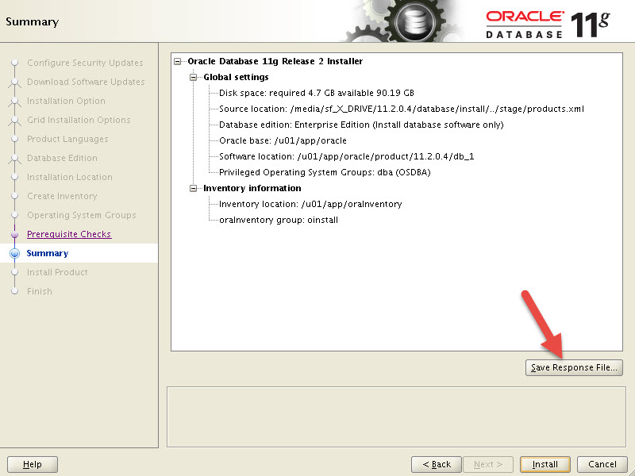

História e objetivo do processo
O Oracle Universal Installer é normalmente usado em modo gráfico, exigindo que o DBA informe manualmente cada opção da instalação. Em ambientes profissionais, repetitivos ou automatizados, a instalação silent permite executar o mesmo fluxo com um arquivo de resposta ou com parâmetros informados diretamente na linha de comando.
Este laboratório mostra como registrar ou usar um response file, executar o runInstaller em modo silent, sobrescrever parâmetros pela linha de comando, instalar versões modernas como 18c/19c extraindo o software diretamente no ORACLE_HOME e aplicar patches durante a instalação.
A imagem ao lado representa a tela do OUI onde o DBA pode salvar um response file antes de iniciar a instalação. Ela é útil quando o DBA prefere montar a instalação pela interface e reaproveitar as escolhas em execuções silent.
